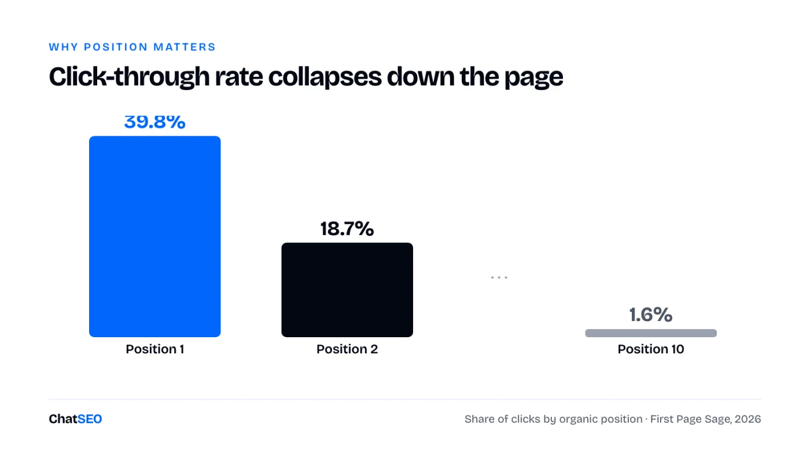
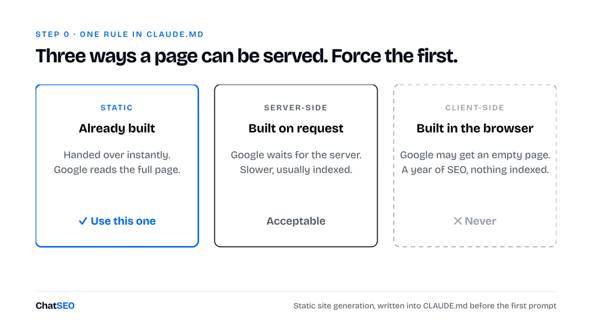
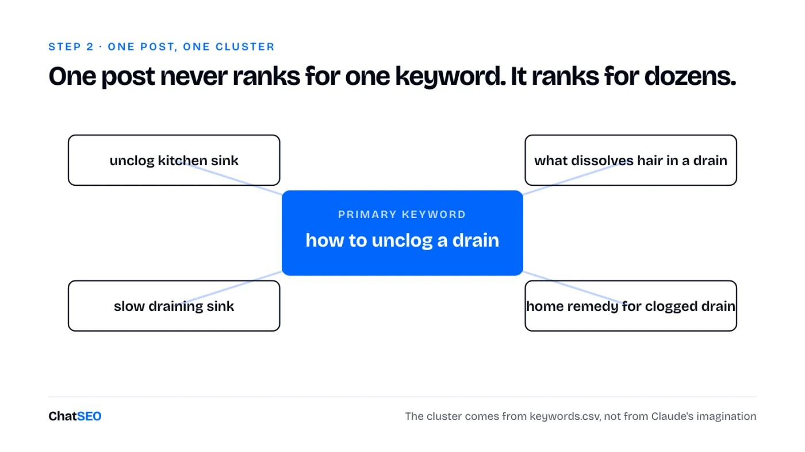
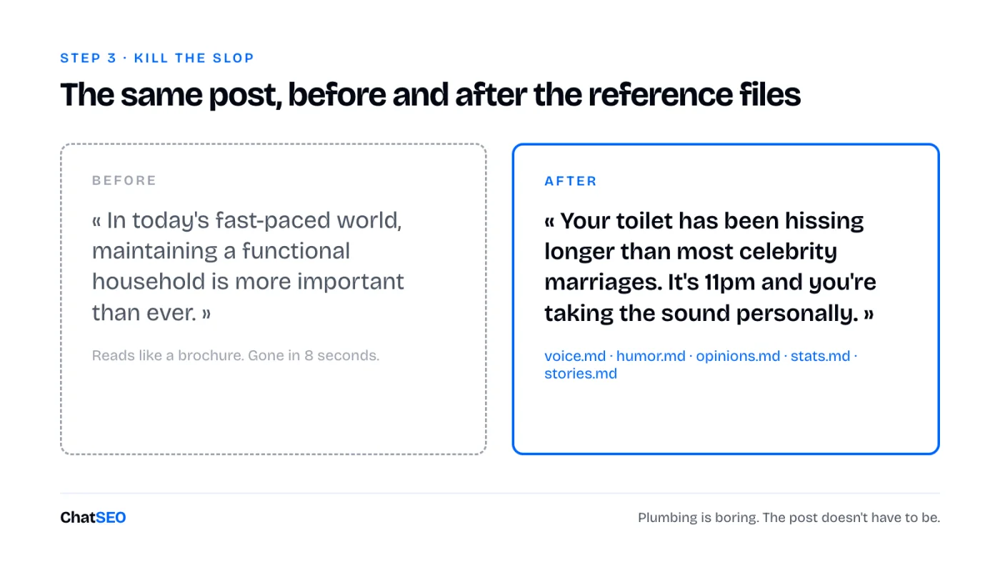
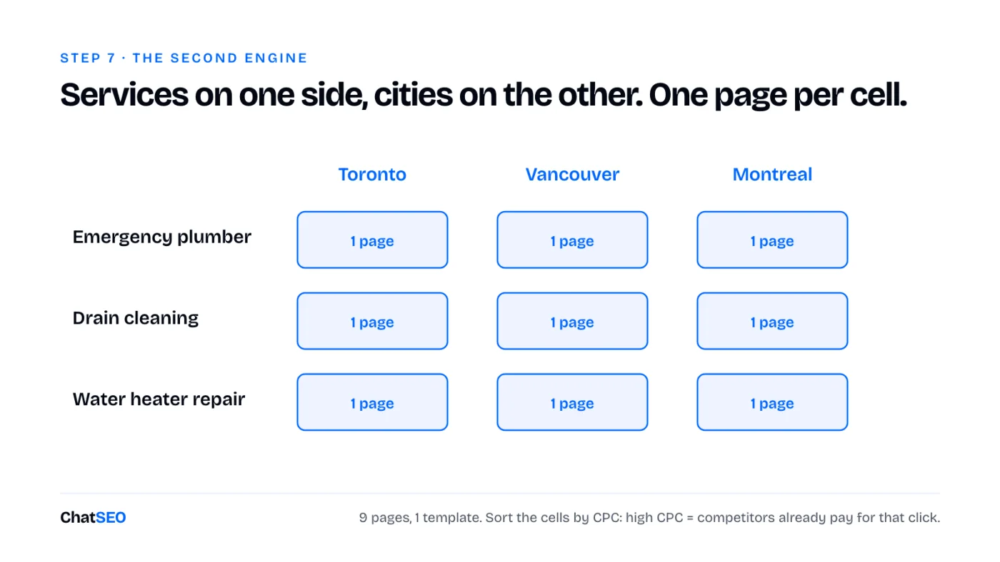
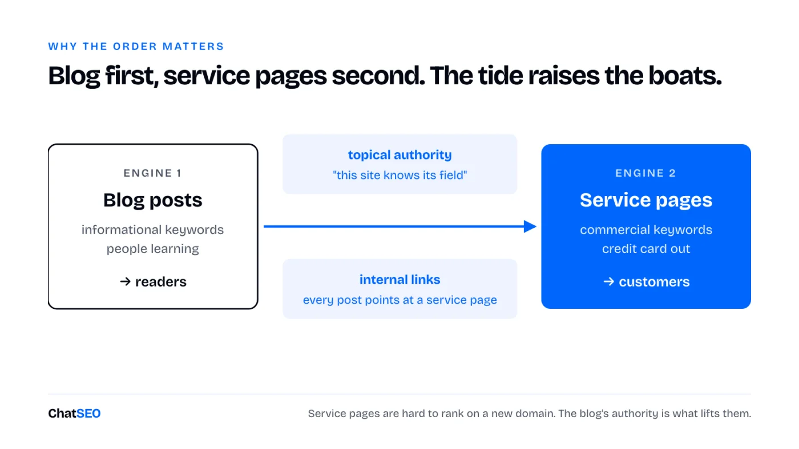

Blog posts at scale plus service pages, built in Claude Code without writing a line of code. Writing is no longer the bottleneck. This is everything around the writing, step by step, with every prompt as a template.
12 prompts to copy, 6 diagrams, no code. ChatSEO only shows up at the steps that need data.
Claude writes faster than any team. The bottleneck is everything around the writing: picking the right keyword, making the page worth reading, and making the site easy for Google to crawl.
Here's the full system. Two engines, one site. Every prompt below is a template: replace anything in [BRACKETS] with your own business and paste.
Click-through rate collapses as you go down the page.
Position 1 gets somewhere between 20% and 40% of clicks depending on the study. First Page Sage's 2026 table puts it at 39.8%, position 2 at 18.7%, position 10 at 1.6%.

So the game isn't "be on page one". It's "be in the top 3 for keywords you can actually win". That's why this system starts with keyword selection, not writing.
Create an empty folder. Add one file: CLAUDE.md. That's your employee handbook. It tells Claude how to build, how to write, and what never to do.
One rule in that file matters more than the rest: static site generation. Three ways a page can be served:

Option 3 is how you spend a year on SEO and never get indexed. Force option 1 in CLAUDE.md. Then one prompt:
Build a website for [YOUR BUSINESS NAME], which offers [YOUR SOLUTION] to [YOUR TARGET CUSTOMER]. Pages: a homepage, a blog index and a services index. Copy the design in the attached screenshot exactly. Use static site generation.
Attach a screenshot of a design you like. Without a reference, you get AI slop design. With one, you get something close to it on the first try.
Claude doesn't know search volume. It doesn't know difficulty. Ask it for keywords and it invents plausible ones.
This is the step where you need a data tool. ChatSEO has the keyword data, and an MCP so Claude Code can read it directly:
I sell [YOUR SOLUTION] to [YOUR TARGET CUSTOMER] in [YOUR COUNTRY / LANGUAGE]. Find 50 informational keywords my future customers search before they buy. Keyword difficulty 30 max, 100+ monthly searches. Remove brand names, competitor names, and queries from people who would be my competitors rather than my customers. Add question keywords and upstream topics my buyers search months before they need me. Group them into clusters, one primary keyword per cluster, and give me a table.
Or skip the copy-paste: plug the ChatSEO MCP into Claude Code (Pro plan) and let it write the file for you. The data and the builder live in the same session.
Use the ChatSEO MCP to find 50 informational keywords for [YOUR SOLUTION] in [YOUR COUNTRY / LANGUAGE]: difficulty 30 max, 100+ monthly searches, no brand or competitor names. Save them to keywords.csv with the columns keyword, volume, difficulty, cluster.
One post never ranks for one keyword. It ranks for dozens.

Pick the next primary keyword from keywords.csv that doesn't have a blog post yet. Write a blog post for it and use its cluster keywords from the same file. Add royalty-free images using the API key in .env.
Put every secret key in the .env file. Never in the code.
The result will be technically fine and completely unreadable. That's expected. Next step fixes it.
A first draft from any model reads like a brochure. Nobody finishes it. And people leaving your page in 8 seconds is a signal Google sees.
Create five reference files in your project:
voice.md: how you talkhumor.md: what you find funnyopinions.md: what you'd argue aboutstats.md: your real numbers (clients served, years in business)stories.md: the anecdotes you tell every clientFeed them your LinkedIn posts, emails, call transcripts. If you have nothing, paste a writer whose style you like and tell Claude it's the humor reference.

Plumbing is boring. Your post doesn't have to be.
Nobody knows the exact algorithm. But the top 3 results for your keyword are a public answer key.
Look at the top 3 organic results (skip forums and directories). Average their word count, their headings, their images, the subtopics all three cover. That's your template.
Analyze the top 3 organic results for [YOUR PRIMARY KEYWORD], excluding forums and directories. Give me their average word count, their H2s, the subtopics all three cover, and one angle none of them cover.
Rewrite the post using that structure and word count. Keep my voice, humor, stats and stories from the reference files.
Match the structure. Beat them on the angle nobody covers.
The checklist is long. The core:
Paste your checklist into Claude Code with one instruction: apply every item, don't touch the tone. That instruction is the whole point. An SEO pass that turns your post back into a brochure just undid step 3.
If your site runs on WordPress or Shopify, ChatSEO can audit and apply this for you:
Audit [YOUR PAGE URL] for on-page SEO on the keyword [YOUR PRIMARY KEYWORD]: H1, keyword placement, internal and external links, FAQ, title and meta description length. List the fixes and apply them without changing the tone.
Three things Google needs:
sitemap.xml: the list of every page you want indexedrobots.txt: what Google may crawl (everything except your admin area)On a first build, performance usually comes out mediocre. You don't need to learn what "render-blocking requests" means. Run a performance audit, paste the full report into Claude Code:
Here's my performance audit: [PASTE THE FULL REPORT]. Fix everything until all four categories hit 100. Also generate robots.txt and sitemap.xml.
Not at 100 after one pass? Paste the new report. Repeat. Two or three loops usually does it.
Blog posts bring readers. Service pages bring customers.
"How to unclog a drain" is someone learning. "Drain cleaning Toronto" is someone with a credit card out. Think of it as a zipper: services on one side, cities on the other. Each cell is one page.

No local angle? Swap cities for industries or use cases ("invoicing software for architects").
To find which cells are worth building, sort by cost per click. High CPC means competitors pay for that click with ads. That's a money keyword.
I sell [YOUR SERVICES, comma-separated] in [YOUR CITIES / INDUSTRIES, comma-separated]. List the highest-CPC commercial keywords that combine one of my services with one of those locations or industries. Show volume and CPC for each, and flag which combinations deserve their own page.
Two rules:
The two engines aren't independent. Blog posts build topical authority: they tell Google you know your field, and they pass internal links to your service pages. Service pages are hard to rank on a new domain. The authority from the blog is what lifts them.

Blog first, service pages second. The tide raises the boats.
Everything above is 30 minutes of prompting per post. Do it once, then bottle it.
Create a skill called /blog. It picks an unused keyword from keywords.csv, builds the cluster, analyzes the top 3 results, writes in my voice using the reference files, adds images, applies the on-page checklist, and reuses the same optimized page template.
Now you type /blog. One post, fully optimized. Do the same for /service.
The trap. Publishing 500 on day one. Google's spam policies explicitly target scaled content produced to manipulate rankings. Ramp up like a real business would. One a day, then two, then three. Never a thousand.
Ask Claude Code to deploy the site to a static host and walk you through the domain setup. Then:
sitemap.xmlOnce pages start getting impressions:
Which pages on [YOUR DOMAIN] published in the last 30 days get impressions but almost no clicks? Suggest a new title and meta description for each.
Review the Google business listing for [YOUR BUSINESS NAME] and tell me the 3 fixes that matter most to show up for "[YOUR SERVICE] [YOUR CITY]".
"100 backlinks for $5" means a private blog network. One site owner, thousands of junk domains linking to you. It can look great for a few months. Then an update hits and the site is gone.
Four methods that don't carry that risk:
"[YOUR NICHE]" "write for us"We did off-page at ChatSEO, clean methods only. DR 51 in five months.
Half true. Ranking well still gets you cited by AI engines, because they search before they answer.
But the click is shrinking. Ahrefs analyzed 300,000 keywords in February 2026: when an AI Overview shows up, the top result's CTR drops by 58%.
So we added one filter to the keyword step: bottom and mid-funnel queries with real business intent, and no AI Overview on the results page. If Google answers the question itself, the #1 spot is worth a lot less.
The system is 10 steps. Most people do step 2 and stop.
The difference between AI slop and a site that ranks is steps 1, 3 and 4: real keyword data, a real voice, and the structure that already wins.
This is how Paul publishes 2 SEO pages a week on chatseo.app. Organic is now close to our #1 source of customers.
The keyword data, the SERP analysis, the audits and the tracking above are what ChatSEO does. Use it in the app, or plug the MCP into Claude Code and run the whole loop from one terminal. 7 days free.
Start your 7-day free trial →